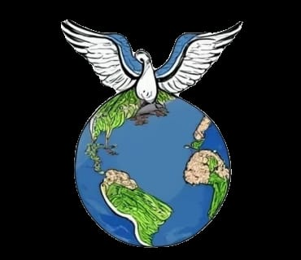

Cruzando Fronteras
La migración humana se refiere a los procesos de migración de los seres humanos, forzada o voluntaria, consistente en el cambio permanente o semipermanente de la ciudad, región o país de residencia. Los seres humanos han migrado desde los orígenes mismos de la humanidad, partiendo desde un punto ubicado en África hasta poblar todos los continentes. En términos prácticos, todas las personas son migrantes o descendientes de migrantes.
Los desplazamientos voluntarios a diferencia de la migración forzada no implican alguna situación que afecte al ser, sólo implica el deseo de la persona por encontrar un lugar donde pueda satisfacer sus necesidades, las cuales no puede cubrir en su lugar de origen.
La Organización Internacional para las Migraciones define la migración forzada como la realizada por cualquier persona que emigra para « escapar de la persecución, el conflicto, la represión, los desastres naturales y provocados por el hombre, la degradación ecológica u otras situaciones que ponen en peligro su existencia, su libertad o su forma de vida»
Algunas causas comunes de migración voluntaria son:
Muchas personas optan por migrar voluntariamente en busca de empleo y mejores condiciones económicas. Esto puede implicar buscar trabajos mejor remunerados, oportunidades de crecimiento profesional o acceso a un mercado laboral más dinámico.
La migración voluntaria también puede estar motivada por la búsqueda de oportunidades educativas. Muchas personas eligen mudarse a otros países para cursar estudios superiores, obtener capacitación especializada o participar en programas de intercambio académico.
La migración voluntaria puede ser impulsada por el deseo de reunirse con familiares que ya han emigrado a otro país. Las personas pueden optar por mudarse a un nuevo lugar para estar cerca de sus seres queridos y formar o mantener lazos familiares.
Algunas personas eligen migrar voluntariamente en busca de una mejor calidad de vida. Esto puede incluir acceso a servicios de salud de calidad, un entorno más seguro y limpio, oportunidades recreativas y culturales, entre otros aspectos que contribuyen al bienestar general.
Aunque la migración forzada es más común en estos casos, algunas personas también pueden optar por migrar voluntariamente debido a la persecución política o la discriminación en sus países de origen. Buscan lugares donde puedan vivir sin temor a ser perseguidos por sus creencias políticas, religiosas o identidad de género, por ejemplo.
Para algunas personas, la migración voluntaria puede ser motivada por el deseo de explorar nuevos lugares, experimentar diferentes culturas y vivir nuevas experiencias. Estas personas pueden ser atraídas por la aventura y la oportunidad de ampliar sus horizontes personales y profesionales.
Algunas causas que pueden dar origen a una migración forzosa son:
Los conflictos armados pueden surgir por una variedad de razones, como disputas territoriales, luchas políticas o diferencias étnicas y religiosas. Estos conflictos pueden resultar en violencia generalizada, ataques a civiles y violaciones de los derechos humanos. Las personas que viven en áreas afectadas por conflictos armados a menudo se ven obligadas a huir de sus hogares para proteger sus vidas y las de sus familias.
La persecución puede tomar muchas formas, incluyendo la discriminación racial, religiosa, étnica o de género, así como la represión política. Las personas pueden enfrentar detenciones arbitrarias, tortura, desapariciones forzadas o incluso ejecuciones debido a su identidad o creencias. La persecución obliga a muchas personas a huir de sus países en busca de seguridad y protección.
En algunas regiones, la presencia de grupos armados y organizaciones criminales puede crear un ambiente de violencia y miedo. La extorsión, el secuestro, la trata de personas y el reclutamiento forzado son algunas de las amenazas que enfrentan las comunidades afectadas por la violencia y el crimen organizado. Como resultado, muchas personas se ven obligadas a abandonar sus hogares en busca de seguridad y una vida mejor.
Los desastres naturales, como terremotos, huracanes, inundaciones y sequías, pueden tener consecuencias devastadoras para las comunidades afectadas. La destrucción de viviendas, infraestructuras y medios de vida puede dejar a las personas sin hogar y sin recursos para subsistir. Ante la falta de opciones, muchas personas se ven obligadas a desplazarse en busca de refugio y asistencia.
La pobreza extrema y la falta de oportunidades económicas pueden hacer que sea difícil para las personas satisfacer sus necesidades básicas, como alimentación, vivienda y atención médica. La falta de acceso a educación y empleo digno puede perpetuar el ciclo de la pobreza, obligando a las personas a migrar en busca de mejores oportunidades y una vida más segura y estable.
El cambio climático puede tener impactos devastadores en el medio ambiente y en la disponibilidad de recursos naturales, como tierras agrícolas y fuentes de agua. La desertificación, la pérdida de biodiversidad y los fenómenos climáticos extremos pueden afectar la capacidad de las comunidades para subsistir y prosperar en sus lugares de origen. Como resultado, muchas personas se ven obligadas a desplazarse en busca de condiciones de vida más sostenibles y seguras.